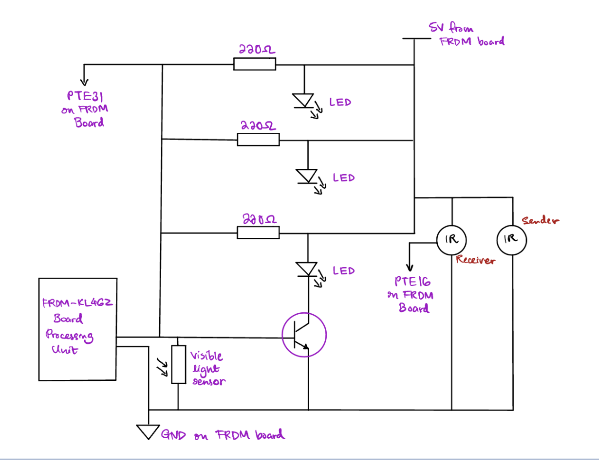

Smart Adaptive Streetlights
A detailed overview of the Smart Adaptive Streetlights project.
Project Overview

The Smart Adaptive Streetlights project focuses on creating an intelligent lighting system that adjusts its lights by reacting to ambient environmental conditions and motion detection. Utilizing an onboard ambient light sensor, the system dynamically controls LED brightness to provide optimal lighting based on changes in natural light. Additionally, the system incorporates IR break beam sensors to detect motion, further enhancing energy efficiency and comfort in urban settings by increasing light intensity when motion is detected and dimming the lights when no motion is present.
Hardware Components
- Microcontroller Board (FRDM-KL46ZF): Central control unit managing sensor inputs and LED brightness.
- Ambient Light Sensor: Measures environmental light levels to adjust LED brightness accordingly.
- LEDs: High-brightness LEDs controlled via PWM signals to simulate real streetlights.
- IR Break Beam Sensor: Detects motion to adjust LED brightness based on detected movement.

Skills
- Embedded Systems Programming
- Microcontroller Configuration
- Sensor Integration and Data Processing
- Pulse Width Modulation (PWM) Control
- Analog to Digital Conversion (ADC)
- Motion Detection and Response
- Power Management and Efficiency Optimization
- Prototyping and Circuit Design
- Team Collaboration and Project Management